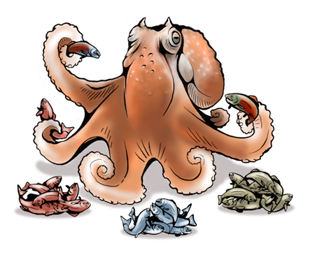

Hierarchical AMOVA for incomplete genomic data
Source:R/amova_genomic.R
amova_genomic.RdComputes a locus-wise analysis of molecular variance (AMOVA). Missing genotypes are handled independently at each locus and all sample sizes, degrees of freedom, and unequal-sample-size coefficients are recalculated from the observations that actually contribute to that locus. This follows the locus-wise strategy used by Stacks rather than deleting every individual with at least one missing genotype.
Usage
amova_genomic(
data,
hierarchy,
strata = NULL,
individual = "INDIVIDUALS",
marker = "MARKERS",
value = NULL,
distance = c("euclidean", "identity", "nucleotide", "manhattan"),
missing = c("locuswise", "filter", "complete"),
min_call_rate = 0.8,
min_groups = 2L,
min_individuals = 2L,
euclidean = c("check", "lingoes", "none"),
standardized = identical(distance, "identity"),
permutations = 0L,
seed = NULL,
tolerance = sqrt(.Machine$double.eps)
)Arguments
- data
A GDS file path or open GDS object accepted by
genometranslator::read_genome(). A long genomic data frame is also accepted for programmatic use and testing.- hierarchy
Character vector naming nested grouping columns, ordered from highest to lowest level (for example
c("REGION", "POP_ID")).- strata
Optional strata file or data frame accepted by
genometranslator::read_strata(). It must containINDIVIDUALSand the columns named inhierarchy. When supplied, these hierarchy columns take precedence over metadata stored in the GDS.- individual, marker
Column names containing individual and marker IDs.
- value
Optional genotype-value column. With
value = NULL, the function derives diploid alternate-allele dosage fromALT_DOSAGE, numericGT, or six-digit calibratedGT. Supply a column name explicitly for haplotypes, nucleotide sequences, or custom distances.- distance
Molecular distance.
"identity"is the 0/1 allelic or haplotypic distance used for a Meirmans-style standardized statistic;"nucleotide"is the proportion of nucleotide differences between haplotype strings;"euclidean"uses squared dosage differences; and"manhattan"uses absolute dosage differences. A function may also be supplied; it must return a squared-distance matrix.- missing
Missing-data strategy.
"locuswise"uses all called observations at each locus."filter"first applies marker-level call-rate thresholds and then works locus-wise."complete"uses only individuals called at every retained marker. No imputation is performed.- min_call_rate
Minimum called proportion required in every lowest-level group when
missing = "filter".- min_groups
Minimum number of represented lowest-level groups required at a locus.
- min_individuals
Minimum called individuals required per represented lowest-level group.
- euclidean
How to handle a non-Euclidean squared-distance matrix.
"check"records the result,"lingoes"applies a Lingoes correction, and"none"skips validation.- standardized
Calculate a Meirmans-style standardized statistic. This is available for
distance = "identity", where the theoretical maximum is defined. It is deliberately not obtained by dividing distances by their observed sample maximum.- permutations
Number of hierarchy-aware randomizations. Zero disables permutation tests.
- seed
Optional random seed used for permutations.
- tolerance
Numerical tolerance for Euclidean checks.
Value
An object of class assigner_amova containing global statistics,
locus variance components, missing-data diagnostics, and permutation
results when requested.
References
Excoffier L, Smouse PE, Quattro JM (1992). Analysis of molecular variance inferred from metric distances among DNA haplotypes. Genetics 131, 479-491.
Meirmans PG (2006). Using the AMOVA framework to estimate a standardized genetic differentiation measure. Evolution 60, 2399-2402.
Examples
if (FALSE) { # \dontrun{
# Hierarchy stored in GDS sample metadata:
fit <- amova_genomic(
data = "genomic_data.gds",
hierarchy = c("REGION", "POP_ID"),
distance = "euclidean",
missing = "locuswise",
standardized = FALSE
)
# Hierarchy stored separately:
fit <- amova_genomic(
data = "genomic_data.gds",
strata = "amova_strata.tsv",
hierarchy = c("REGION", "POP_ID")
)
} # }